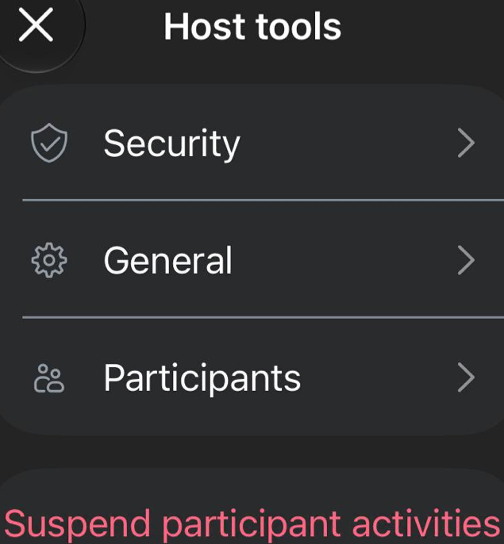
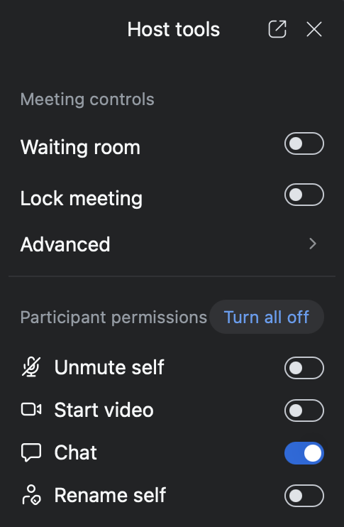

For every meeting
- Verify co-host identities: Contact each co-host at a known number or through the group’s service chat.
- Assign backup host — host only: Participants → [verified person] → More (…) or long-press → Make co-host.
- Host tools vary: Some Host tools are unavailable to co-hosts or mobile app users.
- Participants may still be able to use these features even when you can’t see them.
- In the mobile app, Suspend participant activities or Turn all off may still disable some hidden tools.
- Co-hosts cannot bypass these limits to disable host-only features. Hosts may need to review those settings.
When anticipating disruption
- Apply restrictions before the meeting.
- Remember the Mute and Stop video buttons (stopped video cannot self-start).
-
Optional announcement
Use with care.
“If a disruption occurs, the hosts will take action to stop it.
As an act of self-care, you might look away, turn off your screen, remove your earbuds, or turn the volume all the way down.
You’re in charge of how you take part while the hosts restore the meeting.”
Active Disruption
3-Step Response
1. Suspend disruption and 2. Continue shares, then 3. Restore settings.
0. Secure host and co-host privileges If a host or co-host is disrupting the meeting.
- Reclaim host — meeting’s Zoom account user only: Join the meeting → Reclaim host.
- Revoke co-host — host only: Participants → [co-host] → More (…) or long-press → Revoke co-host permission. If you cannot identify the disruptor, repeat for every unverified or unvalidated co-host.
1. Suspend disruption
Host tools → Suspend participant activities or Turn all off → Suspend.
-
Suspend participant activities or Turn all off disables Host tools (Unmute, Video), muting everyone & stopping all video (including you & the sharer).
- Co-hosts can Unmute themselves, Start video, and Ask to unmute.
- Co-hosts cannot disable some features via Suspend or Turn all off.
View screenshots


2. Continue shares promptly
-
First, REASSURANCE (adhere precisely to ALL steps, or no guarantees!):
“We’ve briefly suspended the meeting to recover serenity.
Video, unmute, & chat are disabled, so no further disruption is possible.
[Today’s disruptors, tomorrow’s MA members.
Suggested Mantra: love them, calm me.] (Use with care.)
Now, please share with confidence!” -
Ongoing, Announce who you Ask to unmute:
- Ask the interrupted sharer to unmute.
- Be ready to Mute as needed.
3. Restore meeting Host tools
-
Swiftly disable Lock meeting & boldly disable Enable waiting room.
“We do not want to create any barriers
between ourselves and the addict who still suffers.” -
If enabling Chat, always restrict to Hosts and co-hosts.
Caution: Enabling Chat may reset permissions to unrestricted DMs!
View screenshot

Printable quick reference.